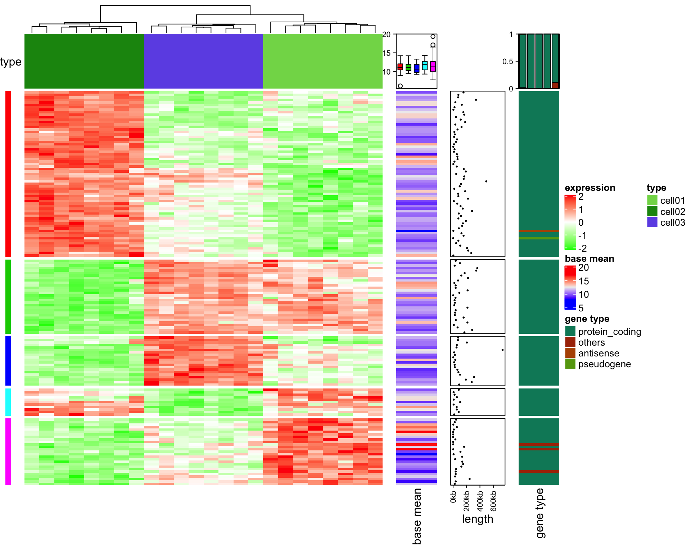
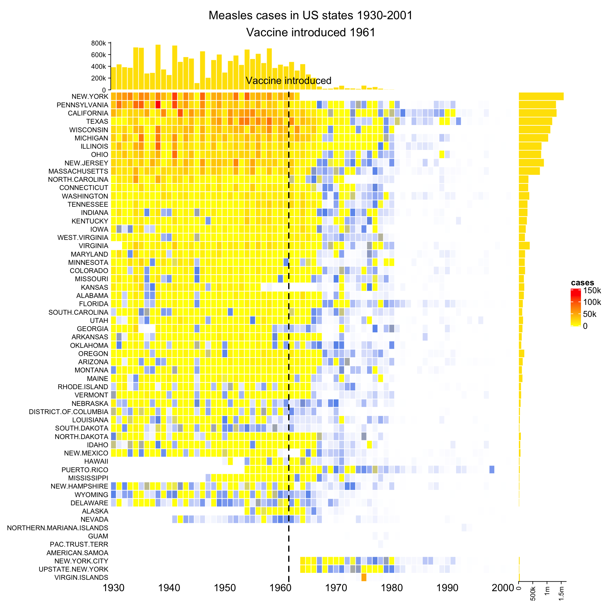

Chapter 9 More Examples of Making Complex Heatmaps
In the supplementaries of the ComplexHeatmap paper, there are four comprehensive examples which are applied on real-world high-throughput datasets. The examples can be found here.
Also my blog has some examples and tips for making better complex heatmaps.
9.0.1 Add more information for gene expression matrix
Heatmaps are very popular to visualize gene expression matrix. Rows in the matrix correspond to genes and more information on these genes can be attached after the expression heatmap.
In following example, the big heatmap visualize relative expression for genes, then the next is the absolute expression. Also gene length and gene type (i.e. protein coding or lincRNA) are visualized.
library(ComplexHeatmap)
library(circlize)
expr = readRDS(paste0(system.file(package = "ComplexHeatmap"), "/extdata/gene_expression.rds"))
mat = as.matrix(expr[, grep("cell", colnames(expr))])
base_mean = rowMeans(mat)
mat_scaled = t(apply(mat, 1, scale))
type = gsub("s\\d+_", "", colnames(mat))
ha = HeatmapAnnotation(df = data.frame(type = type))
Heatmap(mat_scaled, name = "expression", km = 5, col = colorRamp2(c(-2, 0, 2), c("green", "white", "red")),
top_annotation = ha,
show_row_names = FALSE, show_column_names = FALSE) +
Heatmap(base_mean, name = "base_mean", show_row_names = FALSE, width = unit(5, "mm")) +
Heatmap(expr$length, name = "length", col = colorRamp2(c(0, 1000000), c("white", "orange")),
heatmap_legend_param = list(at = c(0, 200000, 400000, 60000, 800000, 1000000),
labels = c("0kb", "200kb", "400kb", "600kb", "800kb", "1mb")),
width = unit(5, "mm")) +
Heatmap(expr$type, name = "type", width = unit(5, "mm"))
9.0.2 Visualize genomic regions and other correspondance
Following example visualizes correlation between methylation and expression, as well as other annotation information (data are randomly generated). In the heatmap, each row corresponds to a differentially methylated regions (DMRs). From left to right, heatmaps are:
- methylation for each DMR (by rows) in samples.
- direction of the methylation (one column heatmap), i.e. is methylation hyper in tumor or hypo?
- expression for the genes that are associated with corresponding DMRs (e.g. closest gene).
- significance for the correlation between methylation and expression (-log10(p-value)).
- type of genes, i.e. is the gene a protein coding gene or a lincRNA?
- annotation to gene models, i.e. is the DMR located in the intragenic region of the corresponding gene or the DMR is intergenic?
- distance from the DMR to the TSS of the corresponding gene.
- overlapping between DMRs and enhancers (Color shows how much the DMR is covered by the enhancers).
## Warning: The input is a data frame, convert it to the matrix.
9.1 Combine pvclust and heatmap
pvclust package provides a robust way to test the stability of the clustering by random sampling from original data. Here you can organize the heatmap by the clustering returned from pvclust().
library(ComplexHeatmap)
library(MASS)
library(pvclust)
data(Boston)
boston.pv <- pvclust(Boston, nboot=100)## Bootstrap (r = 0.5)... Done.
## Bootstrap (r = 0.6)... Done.
## Bootstrap (r = 0.7)... Done.
## Bootstrap (r = 0.8)... Done.
## Bootstrap (r = 0.9)... Done.
## Bootstrap (r = 1.0)... Done.
## Bootstrap (r = 1.1)... Done.
## Bootstrap (r = 1.2)... Done.
## Bootstrap (r = 1.3)... Done.
## Bootstrap (r = 1.4)... Done.plot(boston.pv)
Since by default pvclust clusters columns by ‘correlation’ method, we scale columns for Boston data set to see the relative trend.
Boston_scaled = apply(Boston, 2, scale)
Heatmap(Boston_scaled, cluster_columns = boston.pv$hclust, heatmap_legend_param = list(title = "Boston"))
9.2 Make a same plot as heatmap()
set.seed(123)
mat = matrix(rnorm(100), 10)
heatmap(mat, col = topo.colors(50))
Compare to the native heatmap(), Heatmap() can give more accurate interpolation for colors for continous values.
Heatmap(mat, col = topo.colors(50), color_space = "sRGB",
row_dend_width = unit(2, "cm"),
column_dend_height = unit(2, "cm"), row_dend_reorder = TRUE,
column_dend_reorder = TRUE)
9.3 The measles vaccine heatmap
Following code reproduces the heatmap introduced here and here.
mat = readRDS(paste0(system.file("extdata", package = "ComplexHeatmap"), "/measles.rds"))
ha1 = HeatmapAnnotation(dist1 = anno_barplot(colSums(mat), bar_width = 1, gp = gpar(col = NA, fill = "#FFE200"),
border = FALSE, axis = TRUE))
ha2 = rowAnnotation(dist2 = anno_barplot(rowSums(mat), bar_width = 1, gp = gpar(col = NA, fill = "#FFE200"),
border = FALSE, which = "row", axis = TRUE), width = unit(1, "cm"))
ha_column = HeatmapAnnotation(cn = function(index) {
year = as.numeric(colnames(mat))
which_decade = which(year %% 10 == 0)
grid.text(year[which_decade], which_decade/length(year), 1, just = c("center", "top"))
})
Heatmap(mat, name = "cases", col = colorRamp2(c(0, 800, 1000, 127000), c("white", "cornflowerblue", "yellow", "red")),
cluster_columns = FALSE, show_row_dend = FALSE, rect_gp = gpar(col= "white"), show_column_names = FALSE,
row_names_side = "left", row_names_gp = gpar(fontsize = 10),
column_title = 'Measles cases in US states 1930-2001\nVaccine introduced 1961',
top_annotation = ha1,
bottom_annotation = ha_column) + ha2
decorate_heatmap_body("cases", {
i = which(colnames(mat) == "1961")
x = i/ncol(mat)
grid.lines(c(x, x), c(0, 1), gp = gpar(lwd = 2))
grid.text("Vaccine introduced", x, unit(1, "npc") + unit(5, "mm"))
})
9.4 Session info
sessionInfo()## R version 3.4.4 (2018-03-15)
## Platform: x86_64-apple-darwin15.6.0 (64-bit)
## Running under: macOS High Sierra 10.13.2
##
## Matrix products: default
## BLAS: /Library/Frameworks/R.framework/Versions/3.4/Resources/lib/libRblas.0.dylib
## LAPACK: /Library/Frameworks/R.framework/Versions/3.4/Resources/lib/libRlapack.dylib
##
## locale:
## [1] en_GB.UTF-8/en_GB.UTF-8/en_GB.UTF-8/C/en_GB.UTF-8/en_GB.UTF-8
##
## attached base packages:
## [1] grid methods stats graphics grDevices utils datasets
## [8] base
##
## other attached packages:
## [1] pvclust_2.0-0 MASS_7.3-50 RColorBrewer_1.1-2
## [4] dendsort_0.3.3 dendextend_1.8.0 circlize_0.4.5
## [7] ComplexHeatmap_1.99.0
##
## loaded via a namespace (and not attached):
## [1] shape_1.4.4 modeltools_0.2-22 GetoptLong_0.1.7
## [4] tidyselect_0.2.4 xfun_0.3 kernlab_0.9-27
## [7] purrr_0.2.5 lattice_0.20-35 colorspace_1.3-2
## [10] viridisLite_0.3.0 htmltools_0.3.6 stats4_3.4.4
## [13] yaml_2.2.0 rlang_0.2.2 pillar_1.3.0
## [16] glue_1.3.0 prabclus_2.2-6 fpc_2.1-11.1
## [19] bindrcpp_0.2.2 plyr_1.8.4 bindr_0.1.1
## [22] robustbase_0.93-2 stringr_1.3.1 munsell_0.5.0
## [25] gtable_0.2.0 mvtnorm_1.0-8 GlobalOptions_0.1.1
## [28] evaluate_0.11 knitr_1.20 flexmix_2.3-14
## [31] class_7.3-14 DEoptimR_1.0-8 trimcluster_0.1-2.1
## [34] Rcpp_0.12.18 scales_1.0.0 backports_1.1.2
## [37] diptest_0.75-7 gridExtra_2.3 rjson_0.2.20
## [40] ggplot2_3.0.0 digest_0.6.17 stringi_1.2.4
## [43] bookdown_0.7 dplyr_0.7.6 rprojroot_1.3-2
## [46] tools_3.4.4 magrittr_1.5 lazyeval_0.2.1
## [49] tibble_1.4.2 cluster_2.0.7-1 crayon_1.3.4
## [52] whisker_0.3-2 pkgconfig_2.0.2 viridis_0.5.1
## [55] assertthat_0.2.0 rmarkdown_1.10 R6_2.2.2
## [58] mclust_5.4.1 nnet_7.3-12 compiler_3.4.4